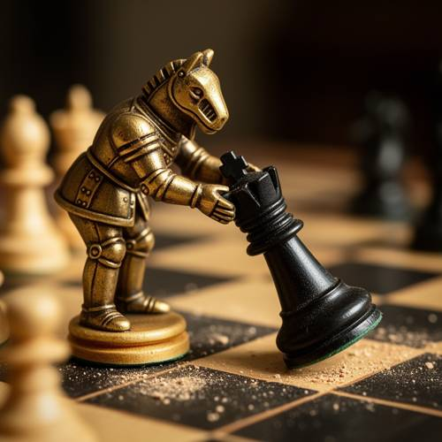
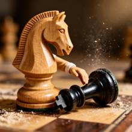

Compound — Under the macro lens, a knight chess piece, like a real gentleman, is
Under the macro lens, a knight chess piece, like a real gentleman, is bending down and stretching out his small hand, trying to lift up the fallen black bishop, with a dusty chessboard in the background.

Direct — one call, no iterationContinuum — Kimi K3 + FLUX.2-dev
Judge — Direct
FAILCompound - Imagination — The image displays a golden, anthropomorphic knight chess piece bending over and using its hands to lift a fallen black chess piece. This is an imaginative scene that is impossible in real life. However, the fallen piece is a black king, distinguished by the cross on its head, not a black bishop as required by the prompt.
PASSRelationship - Similarity — The image shows a golden knight chess piece in the act of bending down to help up another fallen piece. This action of offering assistance is a visual representation of a chivalrous or gentlemanly gesture, thus creating the specified similarity.
PASSAction - Full-body (Character/Anthropomorphic) — The image shows the full body of an anthropomorphic knight chess piece. The piece is depicted in a dynamic pose, bending its torso and knees forward while stretching its arms out to hold the other chess piece, matching the described action.
Judge — Continuum
PASSCompound - Imagination — The image depicts an impossible scene where a wooden knight chess piece is anthropomorphized with a small arm and hand. It is shown leaning over a fallen black chess piece (a king, not a bishop) on a chessboard, with its hand resting on the fallen piece as if to help it up. The background is a dusty chessboard.
PASSRelationship - Similarity — The knight chess piece is portrayed in a manner suggestive of a gentleman. It is performing a courteous act of extending a hand to a fallen piece. The arm has a white cuff, resembling a formal shirt sleeve, which enhances this gentlemanly personification.
PASSAction - Full-body (Character/Anthropomorphic) — The image shows the anthropomorphized knight chess piece leaning forward, which constitutes 'bending down' in this context. A small, human-like arm extends from the knight's body, and the hand is stretched out to touch the fallen black chess piece.
What the agent did
Thinking
We need answer to user likely wants generate image per benchmark policy. Need use flux2-dev always. Need craft prompt. User prompt descriptive. Need generate. Need inspect. We can call generate_image. Need maybe no seed. Need perhaps size default 1024. Prompt: macro lens, wooden knight chess piece anthropomorphized as real gentleman bending down, stretching tiny hand, trying to lift fallen black bishop chess piece, dusty chessboard background, shallow depth of field, cinematic, detailed. Since chess pieces don't have hands; but prompt asks like real gentleman, small hand. Need maybe "elegant white/wooden knight chess piece with tiny sculpted gloved hand/arm" Actually knight usually horse head; a gentleman knight maybe humanized. Need ensure bishop fallen. Black bishop lying on side. Dusty chessboard. Need maybe macro. Generate with flux2-dev. Then inspect visual. Need mark best as soon as willing. Let's generate.
Step 1 — `generate_image`
{
"prompt": "Extreme macro photograph of a chess scene: a polished light-wood knight chess piece anthropomorphized like a courteous gentleman, leaning forward and bending down, extending a tiny carved wooden hand toward a fallen black bishop chess piece lying on its side. The knight appears to be trying to lift the bishop upright. Background shows a dusty worn chessboard with scattered fine dust particles, soft shallow depth of field, dramatic warm side lighting, intricate wood grain, realistic miniature scale, cinematic macro lens photography, high detail, 1:1 composition.",
"model": "flux2-dev"
}
Result img_0

Thinking
We have image. Need inspect. Looks good. Knight chess piece with anthropomorphic arm hand, bending? Actually body upright horse head, arm reaching down. Black bishop lying fallen. Dusty chessboard, macro. User said "like a real gentleman, is bending down and stretching out his small hand, trying to lift up the fallen black bishop". Image clearly does. Need mark best. Maybe black bishop has green base? It seems black piece lying with bottom to right. Good. Need maybe knight is not truly bending down, but arm stretched. Could improve by making posture more gentlemanly: torso/horse head leaning lower, perhaps arm under bishop. But current image is strong. Need maybe mark best now. Could potentially stop. Need call mark_best. Then final concise. Since policy says last action before stopping check mark. Call mark_best now.
Step 2 — `mark_best`
{
"image": "img_0",
"reason": "Clear macro chess scene with the light wooden knight reaching a small gentlemanly hand toward the fallen black bishop on a dusty chessboard; composition and subject match the prompt well."
}
Thinking
Need final answer perhaps mention done. Since generated image already shown by tool. Need no more tool. Keep concise.